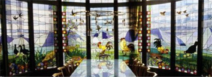

Seja Bem-vindo!
 Nós trabalhamos com transparência.À procura de materiais transparentes para vitrines ou tetos? Encontrou!
Possuímos a melhor qualidade e os melhores preços em chapas e itens em acrílico, tanto no atacado como varejo.
Encontre ainda informações sobre o acrílico em nosso website, um produto leve, resistente e maleável.
Clique no link "Produtos" e verifique nossos preços!